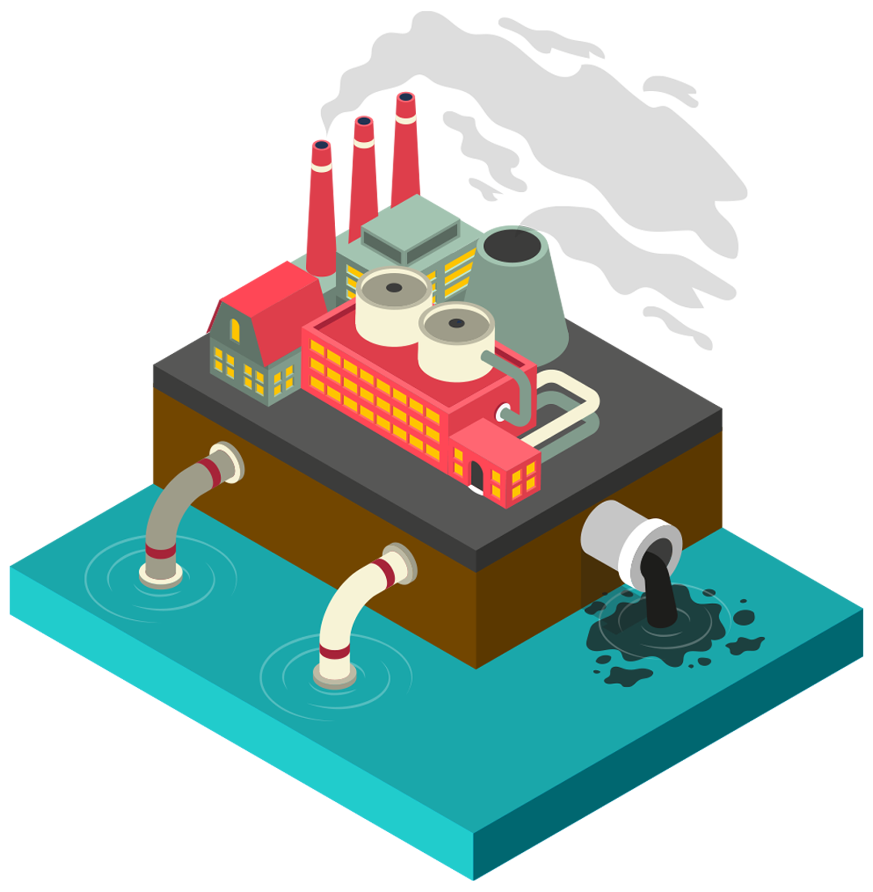

패스트패션에 대해 더 알아볼까요?
최신 트랜드를 즉각 반영하여
빠르게 제작, 유통시키는
의류를 뜻합니다
이러한 패스트 패션은
제작부터 폐기까지 전 과정에 걸쳐
지구의 환경을 위협합니다
옷을 제조하고 폐기 하는데 배출되는 연간 120억 이상의
탄소배출량은 전세계 탄소 배출량의 10%에 이르고 있어
대기오염에 심각한 영향을 끼치고 있습니다

티셔츠 한 장 만드는데 2700L의 물이 필요합니다
패스트 패션의 수질오염은 전 세계 공업용수오염의 20%를 차지하며
생수병 500억개 수준과 동일한 50만톤의 플라스틱을 매년 배출합니다

fefe-long’은 ‘fast fashion to long’의 줄임말로
옷 착용의 짧은 주기의 변화를 길게 변화시키자는 의미를 담고 있습니다.
저희는 ‘fast fashion’에 대한 정보를 사이트에 게재해,
슬로우 패션으로 세상의 작은 변화의 바람을 일으키고자 합니다.